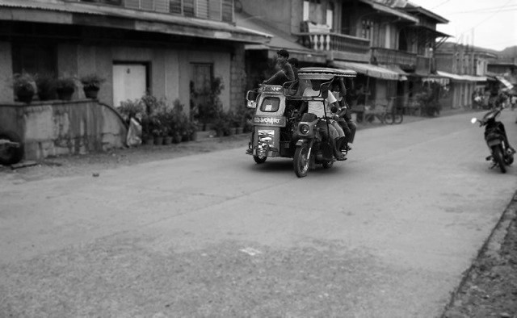
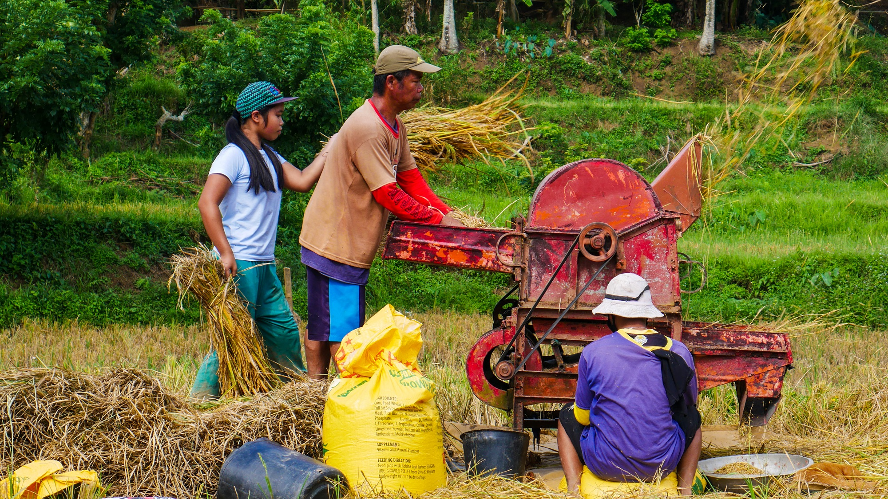
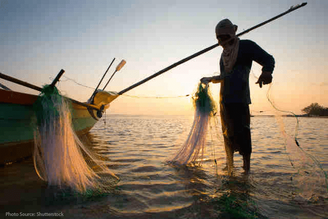

History

History tells us that the town of “Torrijos” was a vast plain noted for her rich natural beauties and abundant resources. The majestic Mt. Malindig and its green forest, the rivers that flows from its summit to the vast plain of Malibago and the lowlands of Tigwi, the mineral ores deep under Torrijos’ earth, and the sea which teem with fish and other marine products, may be considered prime factors that attracted people of other places to settle in this community.
in the southern part of the town willfully and solicitously determined to build a town to facilitate their religious duties to God and their civic obligations to the state, started talking with the people and their interest a town.
When they got the approval of the majority of the residents through the initiative of Rev. Fr. Baltazar Leaño of Sta. Cruz, they made representations and request with the Governor of the province of Mindoro, to which the island of Marinduque was affiliated. The request was granted a temporary decree was issued. The “Gobernadorcillo” of Sta. Cruz was authorized together with some prominent people of Sta. Cruz to select the place where to erect the town. There were two proposed locations, in Tigwi and Matuyatuya. With the approval of Fr. Baltazar Leaño and the majority of the people, Matuyatuya was selected for reason of its convenience as to its distance from Sta. Cruz.
Not long after the completion of the church building, the “Tribunal” and the “Scola Pint”, terrible lightning and thunder occurred and the church was burned and destroyed. Because of this incident and phenomenon, they considered this as a bad omen sent by God to this town. This then, made people think of transferring to another place.
Again through the initiative of Rev. Fr. Leaño, being the Curate, yielded with the plan of transferring the site to Tigwi. For a certain period of time people thought that God approved and they were delighted and live a peaceful life. Nevertheless, pestilence swift the town and newly affect the whole populace. They fled to live in different places afraid of the incident.
These two incidents were then related to the “Governador” and through the effort of Fr. Baltazar Leaño, the “Gobernadorcillo” called and gathered all the people scattered for fear, telling them that the sire of the new town is again transferred to in between the two unlucky places. They selected a wide fertile plain, presently called Marlangga. But because of its low area and the frequent floods visiting the area each year, the government approached Don Gavino Rivamonte and offered him a parcel of land in Sibuyao in exchange to the site that is now the Poblacion, the seat of the Torrijos Municipal Government.
The “proprietarios” of the town decided to have a permanent “Cura Parroco” so they made a representation with the Archbishop of Manila, Monsignor Nozaleda. They guaranteed to support a permanent priest. They also gave “Mitra” of several hectares of land. It was Rev. Fr. Baltazar Leaño who was assigned as the first “Cura Parroco” of the town of Torrijos. And through his works, the Archbishop Nozaleda, as “Governor-General” issued a decree in the year 1882 the necessary support and materials for the new Parish Priest
Goverment officials
Torrijos is a municipality of Marinduque, a province in the MiMaRoPa Region or Region 4-B, Philippines.
Here are the officials who will serve the municipality from 2022 to 2025:
Mayor – Lorna Q. Velasco
Vice Mayor – Ricardo R. de Galicia
Municipal Councilors or Sangguniang Bayan (SB) Members
CRUZADO, JOEL (PDPLBN)
FRIAS, EDMAR (PDPLBN
FABUL, ROMELITO (PDPLBN)
PEREYRA, NATO (PDPLBN)
PAMINTUAN, PRIMO (PDPLBN)
PASTRANA, MARIFE (PDPLBN)
REGALADO, GINA (AKSYON)
CONSTANTINO, LARRY (AKSYON)
Baranggay
Barangays
Torrijos is politically subdivided into 25 barangay
Bangwayin,Bayakbakin,Bolo
Bonliw
Buangan,Cabuyo
Cagpo
Dampulan,Kay Duke
Mabuhay
Makawayan,Malibago
Maranlig
Marlangga,Matuyatuya
Nangka
Pakaskasan,Payanas
Poblacion
Poctoy,Sibuyao
Suha,
Talawan,Tigwi
tourism
Tourism
Torrijos White Beach (also known as Poctoy White Beach Resort, Barangay Poctoy)
Battle of Pulang Lupa Monument (Barangay Bolo)
Ka Amon Cave (Barangay Bonliw)
Freedom Park (also known as Luneta Park, Barangay Poblacion)
Sibuyao Farms
Bonliw Loom Weaving (Barangay Bonliw)
Tabag Cliff and River (Barangay Malibago
Community
A community is a group of individuals who share common interests, goals, or characteristics and are connected by social, cultural, or geographical ties. It is a fundamental unit of human society where people come together to interact, support one another, and create a sense of belonging.
Communities can take various forms, ranging from small, tightly-knit neighborhoods to larger, geographically dispersed groups connected through technology. They can be based on shared geographical location, cultural background, profession, hobbies, or any other common factor that brings people together.
The purpose of a community is to foster social connections, provide support, and promote cooperation among its members. Communities play a vital role in shaping individual identities, providing a sense of belonging, and creating opportunities for personal growth and development. They provide platforms for people to interact, exchange ideas, collaborate, and work towards common goals.
In a community, members often engage in activities such as organizing events, volunteering, sharing resources, and supporting one another during challenging times. Community bonds can be strengthened through regular communication, mutual respect, and a shared commitment to the well-being of its members.
Advancements in technology have also expanded the concept of community, allowing individuals to connect and form communities online. Online communities enable people to interact with others who share similar interests or experiences, irrespective of geographical barriers.
Communities can have a significant impact on individuals and society as a whole. They contribute to social cohesion, promote cultural diversity, and can be powerful agents for positive change. By fostering a sense of unity, communities have the potential to address common challenges, address social issues, and create opportunities for collective progress.
In conclusion, communities are essential components of human society, providing support, connection, and a sense of belonging to individuals. Whether in physical or virtual spaces, communities play a vital role in shaping our identities, fostering social bonds, and creating opportunities for personal and collective growth.

Pagsasaka
The municipality of Torrijos is one of the better places in which farming provides the primary means of subsistence for the local population. When it comes to people's fundamental requirements, it can be of assistance to them. The farming industry makes a contribution to the growth of both society and the economy. Both the quality of the food that farmers produce and the type of land on which crops are grown can be improved through agricultural practices. Growing one's own food on a farm might result in significant financial savings for a family.

Pangingisda
The municipality of torrijos is rich in marine resources,that can help to all people. And because of that, we are bless to be part of that place. You!!, Do you want to be part?

Paggagawa ng basket
weaving baskets
One way for us Filipinos to demonstrate our expertise, aptitude, or competence is through basket weaving. They were taught to do it by their parents or successive generations and do it as a means of subsistence.Making baskets enhances both your hand and mental abilities, which has numerous advantages. Most people utilize this as a stress reliever since they spend time constructing baskets when they are bored at home. Because they have been well-trained for a long time, the work may appear difficult to us to be simple to them. We should therefore not disregard their efforts and should pay attention to them. Let's be grateful for their labor because it takes time. This is another aspect of Filipino culture that is important to preserve because it contributes to our people's collaboration and unity.